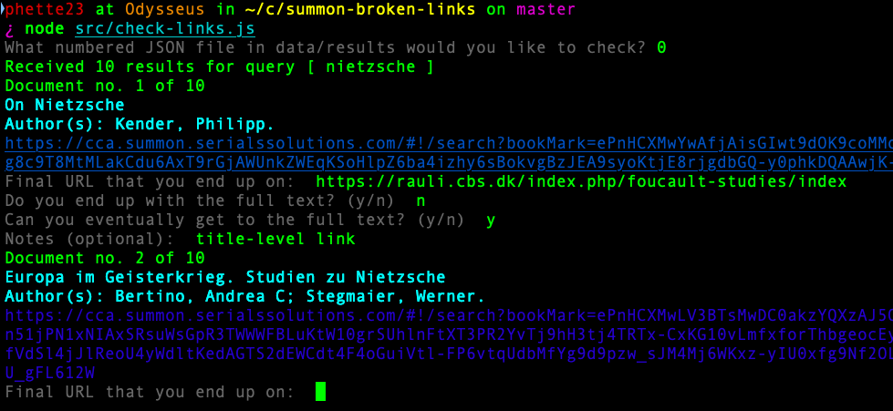

Broken Full Text Links
I'm specifically talking about full text links in your discovery layer, because when you click "full text online" the discovery layer doesn't actually _know_ what will happen on the other end. You might be sent straight to a PDF or straight to a 404 page.
report a broken link
Shout out to Robert Hoyt & Fairfield University, who provided code and the general architecture for this.Summon JS | Wagtail "broken links" app
When we first noticed these broken links, our approach was to enable users to report when they encounter one. I added custom client-side JavaScript to our Summon instance that inserts an additional "report broken link" feature just after the full text link. When a user selects it, a small pop-up dialog asks for an optional email address and description. When they submit it, that information along with the link's OpenURL is POSTed via AJAX to a small web app living on our website, which in turn pushes it into a spreadsheet, where it's easy for me to manage, parse the OpenURL metadata, and classify the reported problems.
Big shout out to Robery Hoyt & Fairfield University, who first developed this approach. I had asked Summon's support about how to set this up and they pointed me in his direction.
why do links break?
inaccurate metadata in the DL indexinaccurate metadata in the content provider database, causing a mismatch with the DL indexa disagreement between DL index and content provider over geuinely debatable metadata values, such as the title of a book reviewa granularity mismatch : DL index and provider disagree about whether a section should be one or many articles
the content provider has a poor openURL implementation , causing a link to fail due to unused or missing metadata fields
title-level links that do not go to the full textmissing content , the content provider doesn't have an item even though it shouldan item is under embargo and the DL's naïve knowledge base doesn't account for that
we misconfigured EZproxy
we misconfigured our knowledge base , our rights statements are wrong
we deleted a catalog record but our local holdings haven't synced with the DL index yet
stop being weird
So why do links break? I've collected a list of problems from our reports and there are a lot so I'm going to speed through them.
- inaccurate metadata in the DL index
- inaccurate metadata in the content provider database, causing a mismatch with the DL index
- a disagreement between DL index and content provider over geuinely debatable metadata values, such as the title of a book review. Should it be "Review: Book Title" or simply "Book Title"?
- a granularity mismatch: the DL index and the content provider disagree about whether something should be one or many items. Consider a "letters to the editor" segment; the DL might have one item while the content provider has a distinct article for each letter.
- the content provider can have a poor openURL implementation, causing a link to fail due to unused or misused metadata
- title-level links don't go to the full text. While it may be easy for some researchers to navigate from there, most users aren't expecting this. They clicked a link that said "full text" not one that said "I hope you memorized the article's volume and issue cuz you're gonna need them"
- missing content, the content provider doesn't have an item even though it should
- an item is under embargo and the DL's naïve knowledge base doesn't account for that
- we misconfigured EZproxy. Yeah, sometimes we're the ones that screw up.
- we misconfigured our knowledge base, our rights statements are wrong
- we deleted a catalog record but our local holdings haven't synced with the DL index yet. We manually sync deletions and it can take up a month to have them reflected.
is this real life... unsplash-logo Unleashed Agency
So as I sat awash in this sea of issues I started to wonder...does it seem so bad because I'm only getting the reports of _broken_ links? Surely 99% of our links work and I'm just seeing the worst one percent. I wanted to find out exactly how bad the situation was by doing an objective review of how often our discovery layer's full text links resolved and the most problematic content types were.
a series of Node scripts to
randomly select queries from real user data
obtain search results for those queries
test result links for resolution
compile summary statistics
I wrote a series of Node scripts to help me investigate. I took thousands of actual user queries and randomly selected fifty to study. I used the Summon API to obtain search result metadata for these queries. My project then iterates through the first ten search results, opens their links in a browser where I record if they resolve properly and, if not, the general nature of their failure. Finally, the project spits out summary statistics after all the search results are reviewed.
example: reviewing links

Here's what it looks like as I run the project. You can see the title and author of the first query's first result are printed out and I've entered the destination URL that Summon took me to, then a couple boolean values describing whether it was the full text and whether I could _eventually_ find the full text. When I finish entering the first result, the title and author of the second are printed out and its URL is opened in a new browser window.
{
"ContentType": [ "Journal Article" ],
"hasFullText": true,
"inHoldings": true,
"isFullTextHit": false,
"IsPeerReviewed": [ "true" ],
"isPrint": false,
"IsScholarly": [ "true" ],
"LinkModel": [ "DirectLink" ],
"PublicationCentury": [ "2000" ],
"PublicationDecade": [ "2010" ],
"SourceID": [ "proquest", "crossref" ],
"SourceType": [ "Aggregation Database" ],
"link_check": {
"destination": "example.com",
"resolves_to_full_text": false,
"full_text": true,
"notes": "can find article using a query of only its title"
}
}
Here's an example JSON record from the project. It shows the Summon metadata of the original search result, like content type and various boolean properties. Down at the bottom, you can see the "link check" annotation that's populated with the result of my manual test.
This project is on GitHub by the way, if other libraries want to conduct the same study. There's a link on my final slide.
results
Only 78.5% worked 😡eventually located full text for 54.5% of broken links.
±3.72% with a 95% confidence level, N = 469
The results of the study were very disappointing to me. Only 78.5% of links resolved to full text. There were distinct trends in terms of what types of records experienced linking failures: Magazine articles and newspaper articles faired poorly. Journal articles were about average while ProQuest content and Reference materials did better than average.
But the most striking contrast I found was between OpenURL and direct linking, which I've placed on the right side of this graph. Summon records have a "LinkModel" property with one of these two values. OpenURL means that metadata is passed to our link resolver which relays you to the content provider, while a "direct link" means that the DL index itself has some form of absolute URL stored for the item. OpenURL links failed about 63% of the time, while DirectLinks were nearly 98% successful.
A small silver lining to this outcome is that I was able to eventually find full text for a little over half of the broken links. For instance, title-level links are technically not to the full text so I would categorize them as broken, but I could often use the journal's home page to drill down to the desired article. However, I don't necessarily think it's fair to assume that our patrons would be as successful at locating full text and there's still an inconvenience introduced that's contributing to the usability gap that makes our DL feel worse than Google or even Google scholar.
what we're doing
when we're to blame it's an easy, one-time fix
work with Summon support, try to be systematic
new linking strategy: pass only numeric metadata (volume, issue, ISSN) via OpenURL & omit title
cut toxic 🤢 links out of your life , identify & avoid problematic:
content types (Book Reviews)
platforms (Nexis Uni)
re-run broken link study under CDI
So what are we doing to address our broken link problem?
For the errors that are our fault, like EZproxy or knowledge base misconfiguration, it's a one-time fix and these errors have largely disappeared now I know to be more diligent about them.
We're working with Ex Libris' support to fix broken links. At the scale of the DL index, fixing broken records one-by-one is not worth our time. Instead, we try to find systemtic fixes that erase a whole class of problem affecting numerous records. For instance, for some OpenURL linking strategies we've started sending only _numeric_ metadata like volume, issue, ISSN, and date. It's harder to have a disagreement about numeric values, while titles are a common source of problems due to disagreements or character encoding issues. Paradoxically, we can make some OpenURLs _better_ by sending _less_ metadata.
We're also trying to cut toxic links our of our life by identifying problematic content types and providers. We've removed Book Reviews from our default library home page search box because they were among the worst performing content types and also presented usability issues. We're considering dropping our Nexis Uni subscription due to its awful linking performance.
Finally, I'd like to re-run my broken link study now that Summon is using an new index named CDI, though I do not have much confidence that it will substantially improve the situation.
Problem Origins
the library, the discovery layer, content providers, metadata providers
The challenge is, we need to work together with several different stakeholders who are not always on the same page. The matrix of discovery layer, content provider, and metadata provider cannot always be brought into agreement and in fact some of these companies have competing interests and they've proven to be uncooperative. The well-known case of MLA International Bibliography choosing to share its metadata exclusively with EBSCO comes to mind.
why it's hopeless
the finite nature of human life and patience
no one can guarantee DL indexes/linking function
size is itself an obstacle to integrity
the breadth of potential errors is such that human intervention is necessary
vendors won't vet each others' linking & blame each other rather than work to mutual solutions (ODI )
...and that's why I fundamentally believe that fixing discovery layer linking is hopeless. I don't have enough time to discover, much less fix, every metadata error. I have great respect for the Ex Libris support team but they are at least as overworked as I am.
DLs brag about the size of their index but they can't even test if their linking is functional and full text is retrievable in all cases.
Size itself is actually an obstacle to the integrity of the index. How can DL companies test all these links on every update, whether the update is to an index, a supporting link resolver, or even a content provider's database platform?
The breadth of potential problems is so wide and diagnosis so difficult that human intervention is almost certainly required. This is far more involved than checking for a 200 HTTP status code.
Underlying all of this is vendors' insistence on noncooperation. I can't tell you how many support tickets I've been on where I'm playing telephone with two support teams that are convinced the other one's platform is the issue, yet neither has enough access to truly diagnose the issue. I greatly admire The Open Discovery Initiative, it's a great step to encourage standardization and cooperation, but ODI ultimately relies on libraries to pressure vendors to work together.
OpenURL is broken
assumes universal access to accurate metadata
there are platform-specific limitations even if an index has perfect metadata
example: it's impossible for metadata to uniquely identify certain articles in Nexis Uni, which uses only publication and title (no date)
platforms let OpenURLs fail gracelessly
I actually like OpenURL, it's an elegant standard being asked to do too much and implementations are failing.
OpenURL is being asked to fill this cooperation gap and it's just not up to the task. There's a faulty assumption that everyone has access to accurate metadata—or even just _the same_ metadata whether it's accurate or not.
What's worse, _even if_ everyone had perfect metadata, there are platform-specific limitations in how content providers handle OpenURL links. Take Nexis Uni for example: they use only publication and title, nothing else. So it's impossible to uniquely identify, for instance, a specific instance of a regular newspaper column that is repeatedly published under the same name.
Content providers don't have a consistent way to handle broken links, as if they never expected them to happen. Platforms could be much smarter about guessing the content being described when an OpenURL fails.
little has changed
The number of problems discovered in full-text items that are linked via an OpenURL is discouraging; however, the ability of the Summon Discovery Service to provide accurate access to full text is an overall positive because of its direct link functionality. More than 95% of direct-linked articles in our research led to the correct resource. One-click (OpenURL) resolution was noticeably poorer, with about 60% of requests leading directly to the correct full-text item. More alarming, we found that, of full-text requests linked through an OpenURL, a large portion—20%—fail.
—"Measuring Journal Linking Success from a Discovery Service" Stuart, K., Varnum, K., & Ahronheim, J. (2015)
I'd like to close by referencing a University of Michigan study from 2015, where they had a much larger sample size than mine and came to almost exactly the same conclusions that I did. They found that 95% of DirectLinks worked, while only 60% of OpenURLs did, with a 20% overall failure rate. Five years later, nothing's changed.